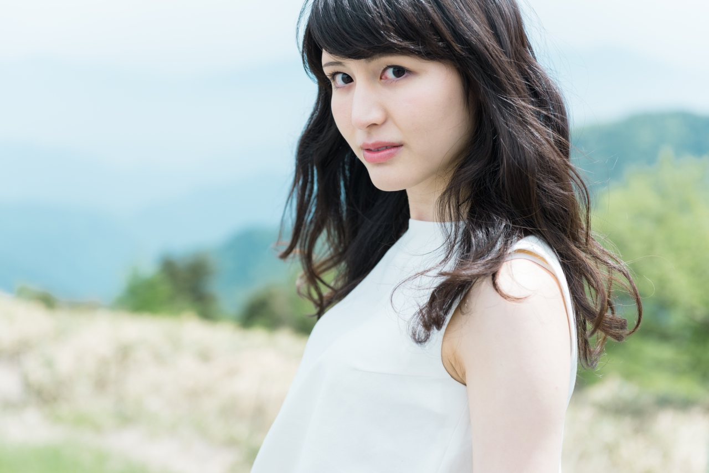
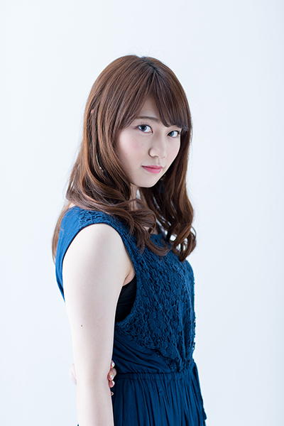
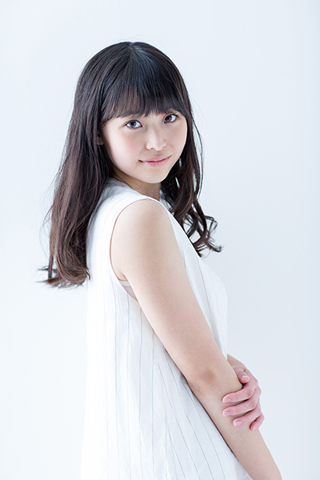
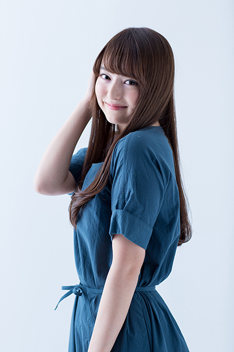
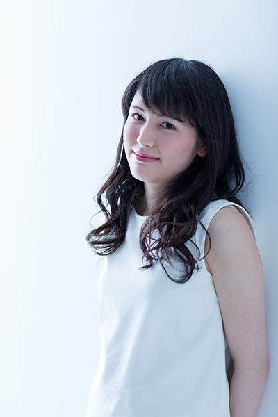

Top
Finalists
Movie
Blog
Sponsor
岩田絵里奈
伊集院ほのか
渡邊渚
高橋茉莉
喜多川あゆ
渡邉麻美子
MISS KEIO CONTEST 2016
Entry No.5 喜多川あゆ 公式ブログ
第8回『娘が本当は父をどう思っているのか。 』
Entry No.4 高橋茉莉 公式ブログ
第9回『フィナーレまで2ヶ月、振り返り』
Entry No.1 岩田絵里奈 公式ブログ
第6回『友達。』
Entry No.3 渡邊渚 公式ブログ
第7回『運動会』

Entry No.6 渡邉麻美子 公式ブログ
第8回『ハマりたくない罠』
Entry No.2 伊集院ほのか 公式ブログ
第2回『ミスコンとは？？』
Erina Diary
Entry No.1 岩田絵里奈

ほのぼの日記。
Entry No.2 伊集院ほのか

Nagisa View
Entry No.3 渡邊渚
ちゃんまのまんま
Entry No.4 高橋茉莉

Ayu is...?
Entry No.5 喜多川あゆ

麻美子会議。
Entry No.6 渡邉麻美子